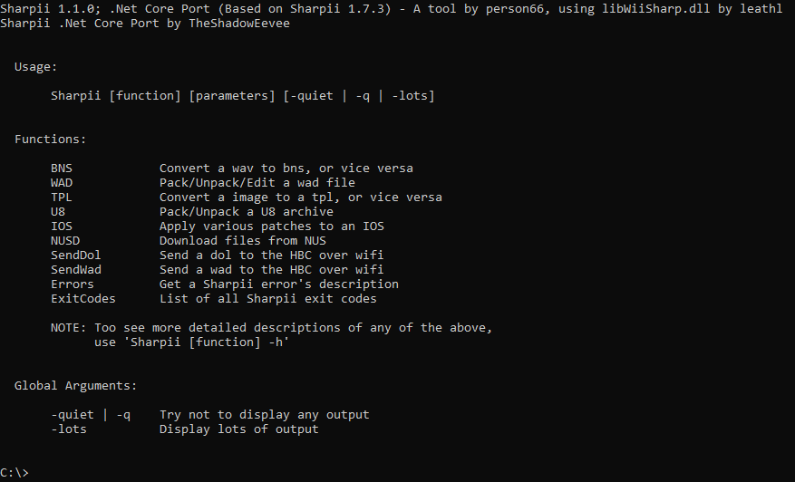

Sharpii-NetCore

Sharpii-NetCore is a fork of the program Sharpii ported to the .Net Core framework, along with added features.
Sharpii-NetCore can run any any platform that .Net Core can compile for (Near all), compared to the original which only ran nativly on Windows.
Some new features have been added, such as better error reporting and ability to supply your own cetk files via a modified version of libWiiSharp.
There are also less files needed to run Sharpii .Net Core; no more dlls in the working directory!